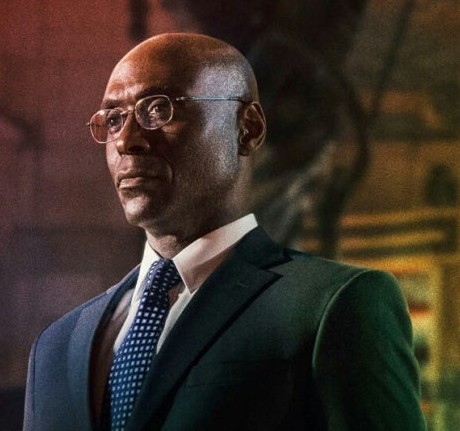
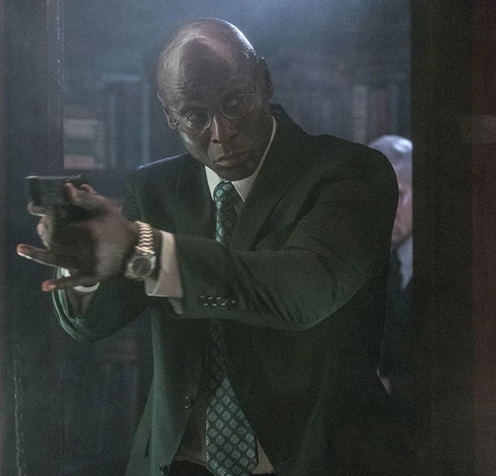
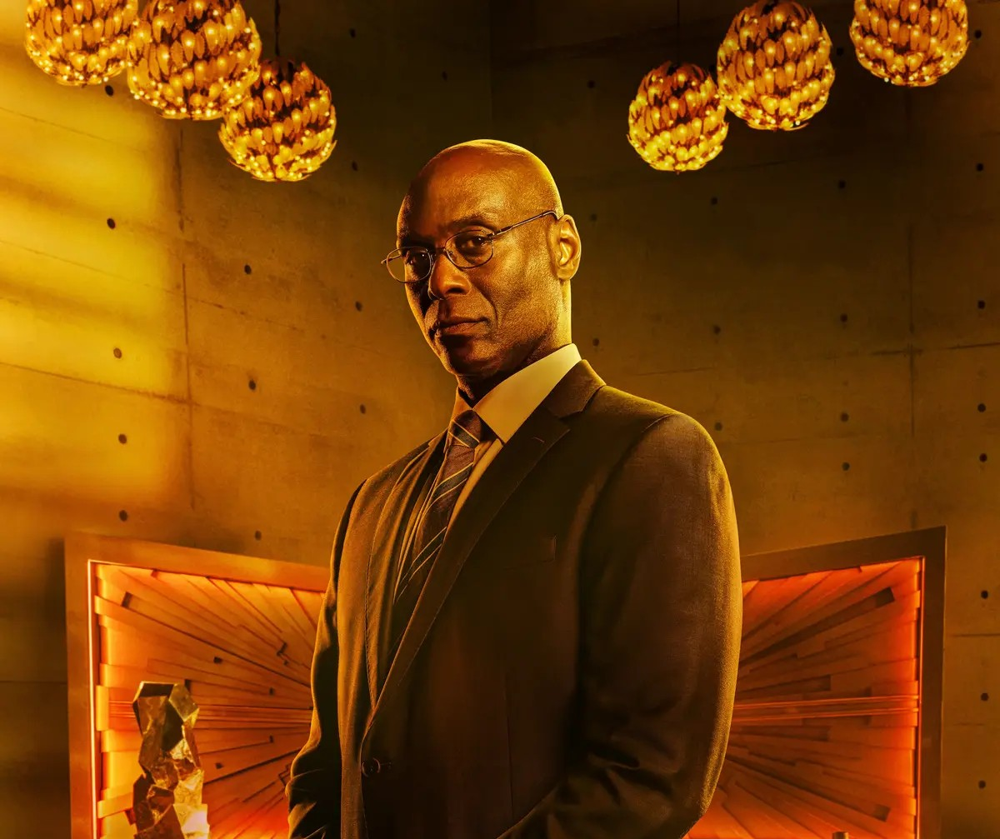

Charon
"And as always, it is a pleasure having you with us again, Mr. Wick."
“그리고 언제나 그렇듯, 다시 찾아주셔서 영광입니다, 윅 선생님.”

Charon
성별: 남자
국적: 나이지리아
직업: Continental New York City의 컨시어지
소속: 고위 관리직 아래에서 활동
관계: 존윅(친구), 윈스턴(매니저 / 친한 친구)
상태: 죽음
